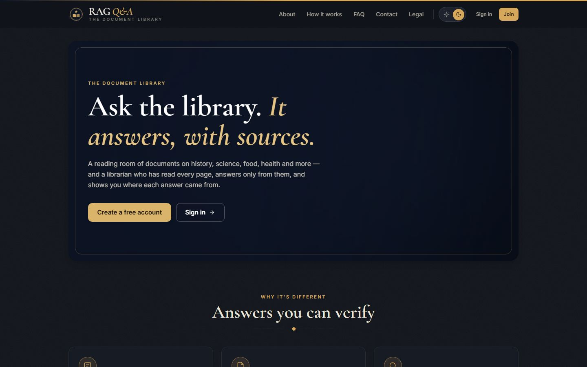

AI · RAG
RAG Q&A
“Ask the library. It answers, with sources.” A document library with an AI librarian that answers only from the documents and shows where each answer came from.
- Type
- AI web app
- Approach
- Retrieval-augmented generation
- Role
- Design & development
- Hosting
- Vercel
- Status
- Live

Visit live site ↗Screenshot of the live site. Click it to open the real thing.
Overview
Why RAG?
Plain language models can sound confident while being wrong. Retrieval-augmented generation first looks up relevant passages from your own content, then answers using them — making replies more accurate and easier to trust.
This project demonstrates that pattern end to end in a clean, fast interface.
What it shows
- Library of documents on history, science, food, health and more
- Answers only from the documents, with sources shown
- Accounts with sign in, plus light and dark themes
- Deployed and publicly accessible
Want an AI assistant for your content?
I can build RAG assistants over your documents, support articles or internal knowledge.
Discuss your project →